[Docker-User Defined Network 활용(2/3)] Docker User Defined Bridge Network 테스트
지난 포스팅에서 docker user defined network의 간단한 설명과 동작을 확인했습니다.
이번에는 docker user defined network를 활용한 컨테이너 간 통신에 연관된 factors를 확인하고 경우의 수에 따라 테스트를 진행하겠습니다.
Docker Network 기능
Service Discovery
Docker는 각 Network 내 컨테이너의 ip주소, 컨테이너 명, Hostname 등을 관리합니다. 각 네트워크는 Subnet mask와 Gateway를 가집니다. 기본적으로 컨테이너의 ip주소는 Network에서 관리하는 Pool 중 할당이 됩니다. 할당하고 싶은 ip주소, Hostname이나 network 정보가 있으면 option을 적용해 지정 가능합니다. 각 Network 별 Host정보를 관리하는 기능을 사용해서 컨테이너 명으로 컨테이너 간 통신을 하는 Service Discovery 기능을 수행할 수 있습니다.
Port Expose
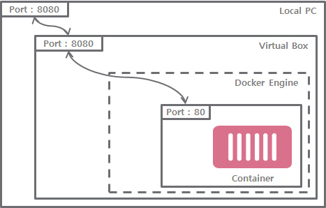
대부분의 경우 Docker는 subnet을 사용해서 컨테이너가 외부에 노출되지 않게 생성합니다. 외부에서 컨테이너에 접근하기 위해서 컨테이너 내부 Port를 컨테이너 Host의 Port에 매핑하는 것이 필요합니다. 이는 Docker 컨테이너를 실행시 –publish 옵션으로 간단히 수행할 수 있습니다. 외부에서 노출된 Port로 접근시 컨테이너 내부 Port로 request가 forwarding 됩니다.
docker run -d -p {외부 노출 Port}:{컨테이너 내부 Port} {image 명:tag}
user defined network을 사용한 Private Network 구성
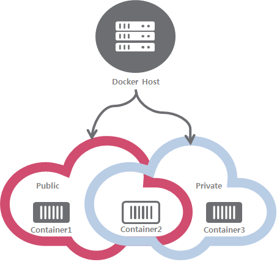
컨테이너의 Port를 노출하지 않은 상태에서 user defined network에 연결하여 외부에서 컨테이너에 접근하지 못하지만 컨테이너 간 내부 통신은 가능한 private network를 구성할 수 있습니다. docker run시 –network option을 지정하면 기본 bridge network인 docker0에 binding되지 않고, 지정한 user defined network에 연결됩니다. 이 상태에서 별도의 Port 노출을 하지 않게 설정하여 private network를 구성할 수 있습니다.
테스트
Docker의 네트워크 기능과 연관된 3가지 factors를 검증하는 방식으로 테스트를 진행합니다. Application 2개를 준비하고 Application1에서 Application2의 ‘/jisang’ endpoint를 호출해 결과를 얻어올 수 있는지 확인합니다.
factors
호출 Host 정보
- 컨테이너 명
- IP주소(docker-machine ip주소)
테스트 환경은 Docker for Windows입니다.
Virtual Box에 Docker Machine을 구성해서 사용하는 경우, 기본 IP주소는 localhost가 아닌 Docker Machine의 IP주소입니다.
$ docker-machine url tcp://192.168.99.100:2376- IP주소(user defined network ip주소)
user defined network의 ip주소는
docker network inspect {network 명}으로 확인 가능합니다.$ docker network inspect js-network [ { "Name": "js-network", #중략... "Containers": { "0a6cca528e793a8be14b68c3b104de74473482f94ffacc9fd573a65453b81cdb": { "Name": "jisang-ms2", "IPv4Address": "172.18.0.2/16", #중략... } } "Options": {}, "Labels": {} } ]호출 Port expose
- 노출 (컨테이너 외부 Port)
- 격리 (컨테이너 내부 Port)
user defined network
- 연결
- 해제
준비물
- Application1
- 명 : jisang-ms1
- 컨테이너 port: 80
- 외부 노출 port: 8080
- RestController로 Endpoint 호출시 jisang-ms2로 통신해 String을 반환합니다.
- Application2
- 명 : jisang-ms2
- 컨테이너 port: 80
- 외부 노출 port: 8081
- RestController로 Endpoint 호출시 “This is jisang”을 반환합니다.
- user defined network
docker network create js-network
Test Case 1
| jisang-ms2 Host | jisang-ms2 Port | user defined network Status |
|---|---|---|
| IP주소(docker-machine ip) | 컨테이너 외부 Port | disconnect |
docker run
- jisang-ms1
docker run -d -e des=http://192.168.99.100:8081 -e SPRING_PROFILES_ACTIVE=docker -p 8080:80 --name jisang-ms1 jisang-ms1:latest
- jisang-ms2
docker run -d -e SPRING_PROFILES_ACTIVE=docker -p 8081:80 --name jisang-ms2 jisang-ms2:latest
수행결과
호출 성공! jisang-ms1 컨테이너에서 docker-machine의 Host와 Port 정보로 jisang-ms2 호출에 성공했습니다.
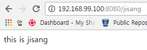
Test Case 2
| jisang-ms2 Host | jisang-ms2 Port | Network Status |
|---|---|---|
| IP주소(docker-machine ip) | 컨테이너 내부 Port | disconnect |
docker run
- jisang-ms1
docker run -d -e des=http://192.168.99.100:80 -e SPRING_PROFILES_ACTIVE=docker -p 8080:80 --name jisang-ms1 jisang-ms1:latest
- jisang-ms2
docker run -d -e SPRING_PROFILES_ACTIVE=docker --name jisang-ms2 jisang-ms2:latest
수행결과
호출 실패! Connection refused가 발생했습니다. jisang-ms2의 외부 port 노출이 없으니 docker-machine의 Host와 Port 정보로 호출이 안되는 것이 당연하게 보입니다.
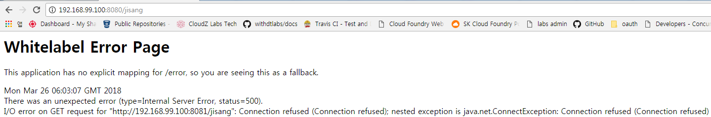
Test Case 3
| jisang-ms2 Host | jisang-ms2 Port | Network Status |
|---|---|---|
| 컨테이너 명 | 컨테이너 외부 Port | disconnect |
docker run
- jisang-ms1
docker run -d -e des=http://jisang-ms2:8081 -e SPRING_PROFILES_ACTIVE=docker -p 8080:80 --name jisang-ms1 jisang-ms1:latest
- jisang-ms2
docker run -d -e SPRING_PROFILES_ACTIVE=docker -p 8081:80 --name jisang-ms2 jisang-ms2:latest
수행결과
호출 실패! UnknownHosException이 발생했습니다. 기본적인 Port 노출만으로는 컨테이너 명으로 Host 정보를 얻어오는 것이 불가능으로 보입니다.
Test Case 4
| jisang-ms2 Host | jisang-ms2 Port | Network Status |
|---|---|---|
| 컨테이너 명 | 컨테이너 내부 Port | disconnect |
docker run
- jisang-ms1
docker run -d -e des=http://jisang-ms2:80 -e SPRING_PROFILES_ACTIVE=docker -p 8080:80 --name jisang-ms1 jisang-ms1:latest
- jisang-ms2
docker run -d -e SPRING_PROFILES_ACTIVE=docker --name jisang-ms2 jisang-ms2:latest
수행결과
호출 실패! UnknownHosException이 발생했습니다. Test Case 3과 동일한 결과입니다. 컨테이너명으로 Host정보에 접근을 못하는 것은 Port 노출과는 연관이 없는 것 같습니다.
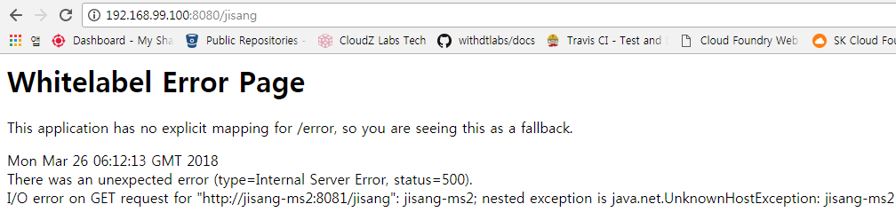
Test Case 5
| jisang-ms2 Host | jisang-ms2 Port | Network Status |
|---|---|---|
| IP주소(docker-machine ip) | 컨테이너 외부 Port | connect |
docker run
- jisang-ms1
docker run -d --network=js-network -e des=http://192.168.99.100:8081 -e SPRING_PROFILES_ACTIVE=docker -p 8080:80 --name jisang-ms1 jisang-ms1:latest
- jisang-ms2
docker run -d --network=js-network -e SPRING_PROFILES_ACTIVE=docker -p 8081:80 --name jisang-ms2 jisang-ms2:latest
수행결과
호출 성공! Test Case 1과 동일하게 jisang-ms2의 Port를 노출한 경우 docker-machine의 Host와 Port 정보로 접근이 가능합니다.
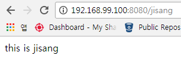
Test Case 6
| jisang-ms2 Host | jisang-ms2 Port | Network Status |
|---|---|---|
| IP주소(docker-machine ip) | 컨테이너 내부 Port | connect |
docker run
- jisang-ms1
docker run -d --network=js-network -e des=http://192.168.99.100:80 -e SPRING_PROFILES_ACTIVE=docker -p 8080:80 --name jisang-ms1 jisang-ms1:latest
- jisang-ms2
docker run -d --network=js-network -e SPRING_PROFILES_ACTIVE=docker --name jisang-ms2 jisang-ms2:latest
수행결과
호출 실패! Connection refused가 발생했습니다. docker-machine의 80 Port에 접근한다는 의미니까 접근이 안되는게 당연한 것 같습니다.
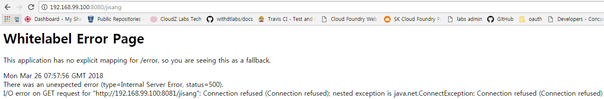
Test Case 7
| jisang-ms2 Host | jisang-ms2 Port | Network Status |
|---|---|---|
| 컨테이너 명 | 컨테이너 외부 Port | connect |
docker run
- jisang-ms1
docker run -d --network=js-network -e des=http://jisang-ms2:8081 -e SPRING_PROFILES_ACTIVE=docker -p 8080:80 --name jisang-ms1 jisang-ms1:latest
- jisang-ms2
docker run -d --network=js-network -e SPRING_PROFILES_ACTIVE=docker -p 8081:80 --name jisang-ms2 jisang-ms2:latest
수행결과
호출 실패! jisang-ms1의 destination을 jisang-ms2의 컨테이너명으로 지정했습니다. UnknownHosException이 아닌 Connection refused가 발생한 것으로 보아 jisang-ms2의 Host 정보에 접근했지만 8081 Port에 띄워진 서버가 없는 것으로 보입니다.
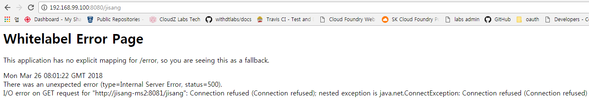
Test Case 8
| jisang-ms2 Host | jisang-ms2 Port | Network Status |
|---|---|---|
| 컨테이너 명 | 컨테이너 내부 Port | connect |
docker run
- jisang-ms1
docker run -d --network=js-network -e des=http://jisang-ms2:80 -e SPRING_PROFILES_ACTIVE=docker -p 8080:80 --name jisang-ms1 jisang-ms1:latest
- jisang-ms2
docker run -d --network=js-network -e SPRING_PROFILES_ACTIVE=docker --name jisang-ms2 jisang-ms2:latest
수행결과
호출 성공! user defined network의 서비스 명과 컨테이너 내부 Port로 jisang-ms1에서 “this is jisang”을 반환받았습니다.
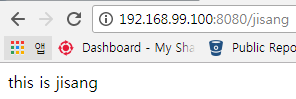
Test Case 9
| jisang-ms2 Host | jisang-ms2 Port | Network Status |
|---|---|---|
| IP주소(user defined network ip) | 컨테이너 외부 Port | connect |
docker run
- jisang-ms1
docker run -d --network=js-network -e des=http://172.18.0.2:8081 -e SPRING_PROFILES_ACTIVE=docker -p 8080:80 --name jisang-ms1 jisang-ms1:latest
- jisang-ms2
docker run -d --network=js-network -e SPRING_PROFILES_ACTIVE=docker -p 8081:80 --name jisang-ms2 jisang-ms2:latest
수행결과
호출 실패! 이제는 익숙한 Connection refused 입니다. user defined network 의 ip주소와 외부 노출 Port가 매칭이 되지 않는다는 의미 같습니다.
Test Case 10
| jisang-ms2 Host | jisang-ms2 Port | Network Status |
|---|---|---|
| IP주소(user defined network ip) | 컨테이너 외부 Port | disconnect |
docker run
- jisang-ms1
docker run -d -e des=http://172.18.0.2:8081 -e SPRING_PROFILES_ACTIVE=docker -p 8080:80 --name jisang-ms1 jisang-ms1:latest
- jisang-ms2
docker run -d -e SPRING_PROFILES_ACTIVE=docker -p 8081:80 --name jisang-ms2 jisang-ms2:latest
수행결과
호출 실패! user defined network에 연결하지 않은 상태로 user defined network의 ip주소를 사용했으니 호출 실패가 당연합니다.
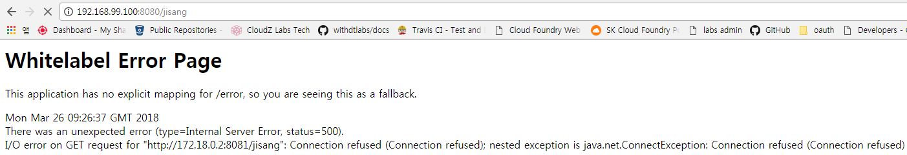
Test Case 11
| jisang-ms2 Host | jisang-ms2 Port | Network Status |
|---|---|---|
| IP주소(user defined network ip) | 컨테이너 내부 Port | connect |
docker run
- jisang-ms1
docker run -d --network=js-network -e des=http://172.18.0.2:80 -e SPRING_PROFILES_ACTIVE=docker -p 8080:80 --name jisang-ms1 jisang-ms1:latest
- jisang-ms2
docker run -d --network=js-network -e SPRING_PROFILES_ACTIVE=docker --name jisang-ms2 jisang-ms2:latest
수행결과
호출 성공! user defined network의 ip주소와 컨테이너 내부 Port를 사용해서 접근에 성공했습니다.
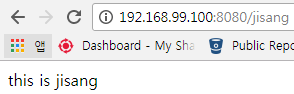
Test Case 12
| jisang-ms2 Host | jisang-ms2 Port | Network Status |
|---|---|---|
| IP주소(user defined network ip) | 컨테이너 내부 Port | disconnect |
docker run
- jisang-ms1
docker run -d -e des=http://172.18.0.2:80 -e SPRING_PROFILES_ACTIVE=docker -p 8080:80 --name jisang-ms1 jisang-ms1:latest
- jisang-ms2
docker run -d -e SPRING_PROFILES_ACTIVE=docker --name jisang-ms2 jisang-ms2:latest
수행결과
호출 실패! Time Out이 발생했습니다.
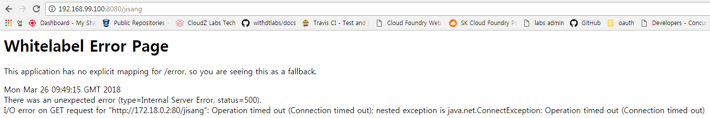
Conclusion
Docker의 네트워크 기능과 연관된 3가지 factors(Host, Port, user defined network 연결/해제)를 경우의 수에 따라 검증하는 방식으로 테스트를 진행했습니다. (12 Test Case)
호출에 성공한 경우를 보면 아래와 같습니다.
| Test Case | jisang-ms2 Host | jisang-ms2 Port | Network Status |
|---|---|---|---|
| Test Case 1 | IP주소(docker-machine ip) | 컨테이너 외부 Port | disconnect |
| Test Case 5 | IP주소(docker-machine ip) | 컨테이너 외부 Port | connect |
| Test Case 8 | 컨테이너 명 | 컨테이너 내부 Port | connect |
| Test Case 11 | IP주소(user defined network ip) | 컨테이너 내부 Port | connect |
- 컨테이너의 Port를 노출하고 {docker-machine ip}:{외부 노출 Port}으로 접속한 경우
- 컨테이너를 user defined network에 연결하고 {컨테이너 명}:{컨테이너 내부 port}로 접근한 경우
- 컨테이너를 user defined network에 연결하고 {user defined network ip}:{컨테이너 내부 port}로 접근한 경우
Docker에서 컨테이너의 접근은 컨테이너의 Port를 노출하고 해당 컨테이너 Host의 ip 정보로 접근이 가능합니다.
user defined network에 컨테이너를 연결한 경우 서비스명으로 ip주소를 찾을 수 있는 Service Discovery 기능을 제공합니다. 또한, 컨테이너의 Port는 내부 Port를 사용해서 접근이 가능합니다.
user defined network에 두 Application을 연결하고 jisang-ms1의 Port를 노출하지 않은 경우, 두 Application 간 내부 통신만 가능한 Private Network를 구성할 수 있습니다. 아래와 같이 구성하면 jisang-ms2를 외부에 노출하지 않고 시스템 구성이 가능합니다.
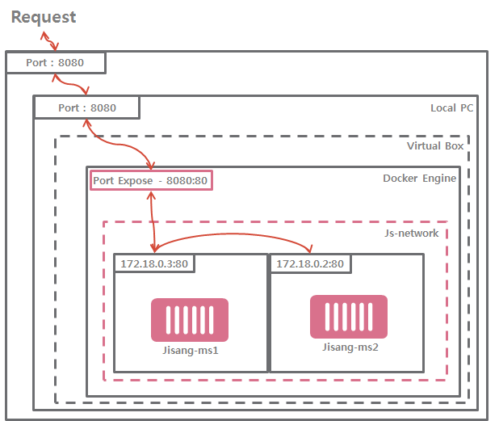
다음 포스팅에서는 Docker user defined network와 Spring Cloud를 사용해서 API 서버 구성을 해보겠습니다.